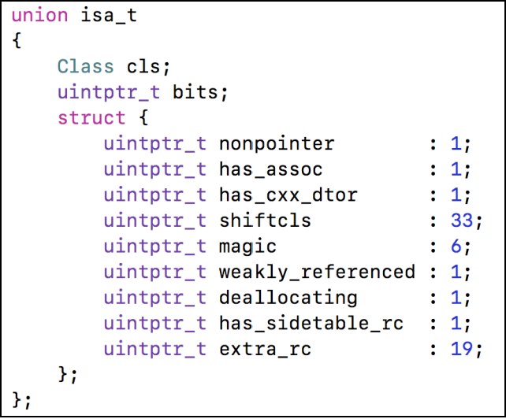
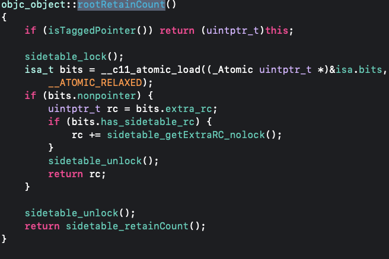
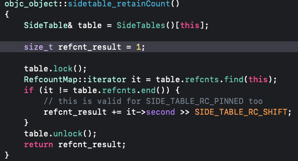
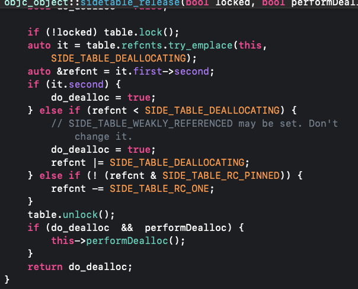
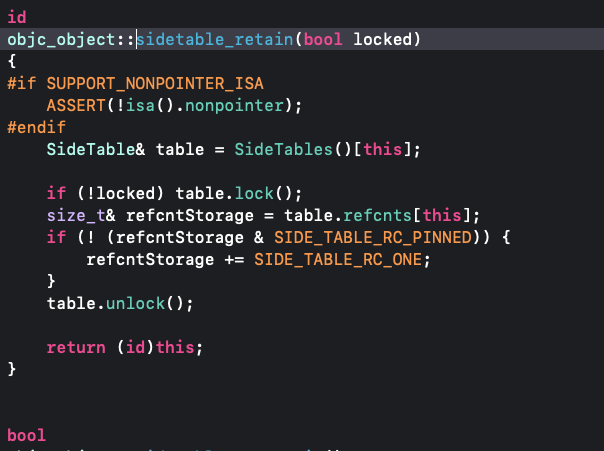
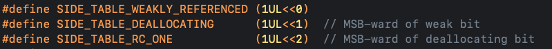
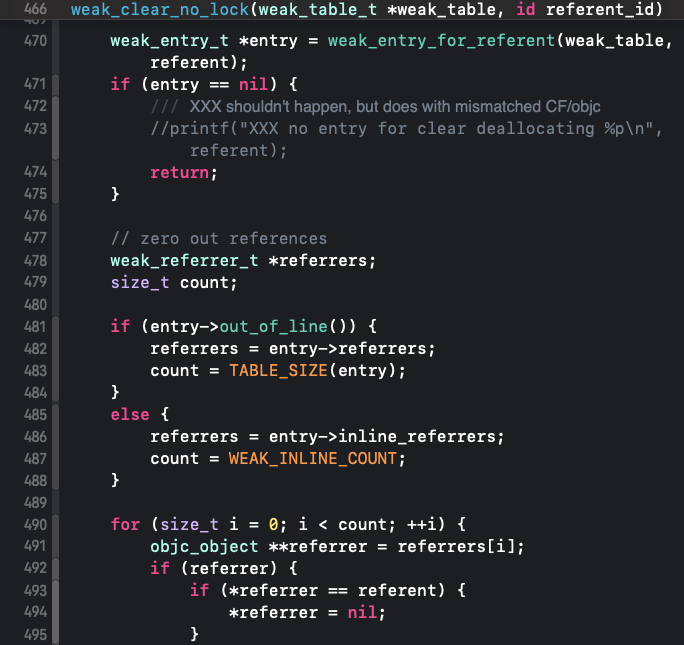
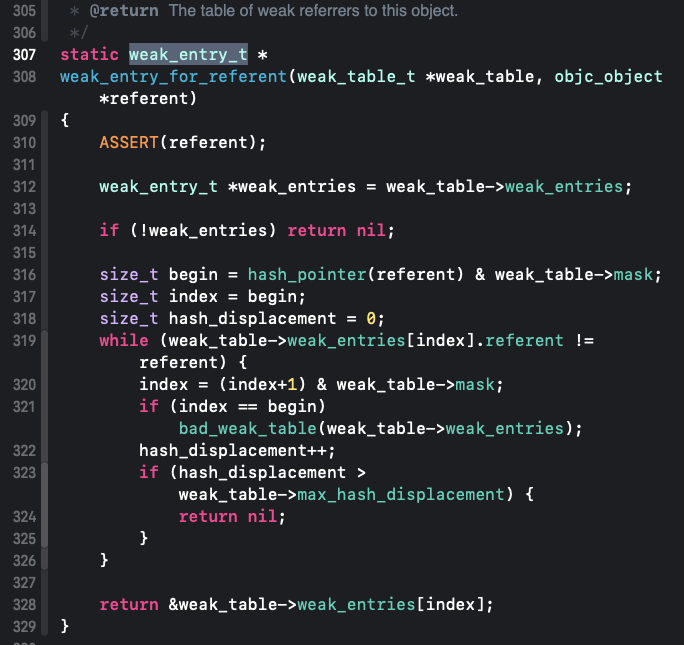

<!DOCTYPE html>


<html lang="en">
  

    <head>
      <meta charset="utf-8" />
        
      <meta
        name="viewport"
        content="width=device-width, initial-scale=1, maximum-scale=1"
      />
      <title>dealloc |  ayer</title>
  <meta name="generator" content="hexo-theme-ayer">
      
      <link rel="shortcut icon" href="/favicon.ico" />
       
<link rel="stylesheet" href="/dist/main.css">

      <link
        rel="stylesheet"
        href="https://cdn.jsdelivr.net/gh/Shen-Yu/cdn/css/remixicon.min.css"
      />
      
<link rel="stylesheet" href="/css/custom.css">
 
      <script src="https://cdn.jsdelivr.net/npm/pace-js@1.0.2/pace.min.js"></script>
       
 

      <!-- mermaid -->
      
      <script src="https://cdn.jsdelivr.net/npm/mermaid@8.9.2/dist/mermaid.min.js"></script>
      
    <link rel="alternate" href="/atom.xml" title="ayer" type="application/atom+xml">
</head>
  </html>
</html>


<body>
  <div id="app">
    
      
    <main class="content on">
      <section class="outer">
  <article
  id="post-iOS学习/内存管理/dealloc"
  class="article article-type-post"
  itemscope
  itemprop="blogPost"
  data-scroll-reveal
>
  <div class="article-inner">
    
    <header class="article-header">
       
<h1 class="article-title sea-center" style="border-left:0" itemprop="name">
  dealloc
</h1>
 

      
    </header>
     
    <div class="article-meta">
      <a href="/2023/02/18/iOS%E5%AD%A6%E4%B9%A0/%E5%86%85%E5%AD%98%E7%AE%A1%E7%90%86/dealloc/" class="article-date">
  <time datetime="2023-02-18T10:31:44.000Z" itemprop="datePublished">2023-02-18</time>
</a> 
  <div class="article-category">
    <a class="article-category-link" href="/categories/%E5%86%85%E5%AD%98%E7%AE%A1%E7%90%86/">内存管理</a>
  </div>
  
<div class="word_count">
    <span class="post-time">
        <span class="post-meta-item-icon">
            <i class="ri-quill-pen-line"></i>
            <span class="post-meta-item-text"> Word count:</span>
            <span class="post-count">800</span>
        </span>
    </span>

    <span class="post-time">
        &nbsp; | &nbsp;
        <span class="post-meta-item-icon">
            <i class="ri-book-open-line"></i>
            <span class="post-meta-item-text"> Reading time≈</span>
            <span class="post-count">3 min</span>
        </span>
    </span>
</div>
 
    </div>
      
    <div class="tocbot"></div>


  
    <div class="article-entry" itemprop="articleBody">
       
  <h3 id="引用计数存储"><a href="#引用计数存储" class="headerlink" title="引用计数存储"></a>引用计数存储</h3><blockquote>
<ul>
<li>在iOS中，使用引用计数来管理OC对象的内存</li>
<li>一个新创建的OC对象引用计数默认是1，当引用计数减为0，OC对象就会销毁，释放其占用的内存空间</li>
<li>调用retain会让OC对象的引用计数+1，调用release会让OC对象的引用计数-1</li>
<li>内存管理的经验总结<ul>
<li>当调用alloc、new、copy、mutableCopy方法返回了一个对象，在不需要这个对象时，要调用release或者autorelease来释放它</li>
<li>想拥有某个对象，就让它的引用计数+1；不想再拥有某个对象，就让它的引用计数-1</li>
</ul>
</li>
</ul>
</blockquote>
<ul>
<li>从arm64架构开始，对isa进行了优化，变成了一个共用体（union）结构，还使用位域来存储更多的信息<ul>
<li>其中has_sidetable_rc为1引用计数器是否过大无法存储在isa中<ul>
<li>如果为1，那么引用计数会存储在一个叫SideTable的类的属性中</li>
</ul>
</li>
<li>extra_rc里面里面存储的值是引用计数器减1,818源码之前是减1，之后则不是了</li>
</ul>
</li>
</ul>
<p></p>
<ul>
<li>SideTable<figure class="highlight plaintext"><table><tr><td class="gutter"><pre><span class="line">1</span><br><span class="line">2</span><br><span class="line">3</span><br><span class="line">4</span><br><span class="line">5</span><br></pre></td><td class="code"><pre><span class="line">struct SideTable &#123;</span><br><span class="line">    spinlock_t slock;</span><br><span class="line">    RefcountMap refcnts; //refcnts是一个存放着对象引用计数的散列表</span><br><span class="line">    weak_table_t weak_table;</span><br><span class="line">&#125;</span><br></pre></td></tr></table></figure></li>
<li>retainCount<ul>
<li>818源码<br></li>
<li>781源码<br></li>
<li>根据key从SideTables中获取sidetable，再从refcnts获取迭代器，从中取出引用计数<br>  </li>
</ul>
</li>
<li>refcnts，在每次引用计数增减，是一个SIDE_TABLE_RC_ONE<ul>
<li>relese，引用计数释放完了，则会调用delloc方法<br></li>
<li>retain<br></li>
<li>每次引用计数改变的值<code>0B100</code>，后两位分别判断是否有弱引用，是否正在释放<br><h3 id="dealloc"><a href="#dealloc" class="headerlink" title="dealloc"></a>dealloc</h3></li>
</ul>
</li>
<li>当一个对象要释放时，会自动调用dealloc，接下的调用轨迹是<ol>
<li>dealloc</li>
<li>_objc_rootDealloc</li>
<li>rootDealloc</li>
<li>object_dispose</li>
<li>objc_destructInstance、free</li>
</ol>
</li>
</ul>
<ol>
<li>会判断是否是弱引用、关联对象、c++析构函数、引用计数表，都没有的话直接free释放<figure class="highlight plaintext"><table><tr><td class="gutter"><pre><span class="line">1</span><br><span class="line">2</span><br><span class="line">3</span><br><span class="line">4</span><br><span class="line">5</span><br><span class="line">6</span><br><span class="line">7</span><br><span class="line">8</span><br><span class="line">9</span><br><span class="line">10</span><br><span class="line">11</span><br><span class="line">12</span><br><span class="line">13</span><br><span class="line">14</span><br><span class="line">15</span><br><span class="line">16</span><br><span class="line">17</span><br><span class="line">18</span><br><span class="line">19</span><br><span class="line">20</span><br><span class="line">21</span><br></pre></td><td class="code"><pre><span class="line">objc_object::rootDealloc()</span><br><span class="line">&#123;</span><br><span class="line">    if (isTaggedPointer()) return;  // fixme necessary?</span><br><span class="line"></span><br><span class="line">    if (fastpath(isa().nonpointer                     &amp;&amp;</span><br><span class="line">                 !isa().weakly_referenced             &amp;&amp;</span><br><span class="line">                 !isa().has_assoc                     &amp;&amp;</span><br><span class="line">#if ISA_HAS_CXX_DTOR_BIT</span><br><span class="line">                 !isa().has_cxx_dtor                  &amp;&amp;</span><br><span class="line">#else</span><br><span class="line">                 !isa().getClass(false)-&gt;hasCxxDtor() &amp;&amp;</span><br><span class="line">#endif</span><br><span class="line">                 !isa().has_sidetable_rc))</span><br><span class="line">    &#123;</span><br><span class="line">        assert(!sidetable_present());</span><br><span class="line">        free(this);</span><br><span class="line">    &#125; </span><br><span class="line">    else &#123;</span><br><span class="line">        object_dispose((id)this);</span><br><span class="line">    &#125;</span><br><span class="line">&#125;</span><br></pre></td></tr></table></figure></li>
<li>按顺序先处理后，再去释放<figure class="highlight plaintext"><table><tr><td class="gutter"><pre><span class="line">1</span><br><span class="line">2</span><br><span class="line">3</span><br><span class="line">4</span><br><span class="line">5</span><br><span class="line">6</span><br><span class="line">7</span><br><span class="line">8</span><br><span class="line">9</span><br><span class="line">10</span><br><span class="line">11</span><br><span class="line">12</span><br><span class="line">13</span><br><span class="line">14</span><br><span class="line">15</span><br><span class="line">16</span><br><span class="line">17</span><br><span class="line">18</span><br><span class="line">19</span><br><span class="line">20</span><br><span class="line">21</span><br><span class="line">22</span><br><span class="line">23</span><br><span class="line">24</span><br><span class="line">25</span><br><span class="line">26</span><br><span class="line">27</span><br><span class="line">28</span><br><span class="line">29</span><br><span class="line">30</span><br><span class="line">31</span><br><span class="line">32</span><br><span class="line">33</span><br><span class="line">34</span><br><span class="line">35</span><br><span class="line">36</span><br><span class="line">37</span><br><span class="line">38</span><br><span class="line">39</span><br><span class="line">40</span><br><span class="line">41</span><br><span class="line">42</span><br><span class="line">43</span><br><span class="line">44</span><br></pre></td><td class="code"><pre><span class="line">void *objc_destructInstance(id obj)</span><br><span class="line">&#123;</span><br><span class="line">    if (obj) &#123;</span><br><span class="line">        // Read all of the flags at once for performance.</span><br><span class="line">        bool cxx = obj-&gt;hasCxxDtor();</span><br><span class="line">        bool assoc = obj-&gt;hasAssociatedObjects();</span><br><span class="line"></span><br><span class="line">        // This order is important.</span><br><span class="line">        if (cxx) object_cxxDestruct(obj);//调用c++析构函数</span><br><span class="line">        if (assoc) _object_remove_associations(obj, /*deallocating*/true);//删删除关联对象</span><br><span class="line">        obj-&gt;clearDeallocating();</span><br><span class="line">    &#125;</span><br><span class="line"></span><br><span class="line">    return obj;</span><br><span class="line">&#125;</span><br><span class="line">//清除弱引用和sidetable</span><br><span class="line">objc_object::clearDeallocating()</span><br><span class="line">&#123;</span><br><span class="line">    if (slowpath(!isa().nonpointer)) &#123;</span><br><span class="line">        // Slow path for raw pointer isa.</span><br><span class="line">        sidetable_clearDeallocating();</span><br><span class="line">    &#125;</span><br><span class="line">    else if (slowpath(isa().weakly_referenced  ||  isa().has_sidetable_rc)) &#123;</span><br><span class="line">        // Slow path for non-pointer isa with weak refs and/or side table data.</span><br><span class="line">        clearDeallocating_slow();</span><br><span class="line">    &#125;</span><br><span class="line"></span><br><span class="line">    assert(!sidetable_present());</span><br><span class="line">&#125;</span><br><span class="line"></span><br><span class="line">objc_object::clearDeallocating_slow()</span><br><span class="line">&#123;</span><br><span class="line">    ASSERT(isa().nonpointer  &amp;&amp;  (isa().weakly_referenced || isa().has_sidetable_rc));</span><br><span class="line"></span><br><span class="line">    SideTable&amp; table = SideTables()[this];</span><br><span class="line">    table.lock();</span><br><span class="line">    if (isa().weakly_referenced) &#123;</span><br><span class="line">        weak_clear_no_lock(&amp;table.weak_table, (id)this); //清楚弱引用</span><br><span class="line">    &#125;</span><br><span class="line">    if (isa().has_sidetable_rc) &#123;</span><br><span class="line">        table.refcnts.erase(this); //清楚sidetable</span><br><span class="line">    &#125;</span><br><span class="line">    table.unlock();</span><br><span class="line">&#125;</span><br></pre></td></tr></table></figure></li>
<li>weak指针释放<ol>
<li>获取到<code>weak_entry_t</code>，从中获取存放的弱引用指针，将其置为nil<br></li>
<li>从<code>weak_table_t</code>，查找的方式，是通过hash表，线性查找的方式<br></li>
<li><code>weak_entry_t</code>的结构，会根据数组长度的不同，结构有所不同<figure class="highlight plaintext"><table><tr><td class="gutter"><pre><span class="line">1</span><br><span class="line">2</span><br><span class="line">3</span><br><span class="line">4</span><br><span class="line">5</span><br><span class="line">6</span><br><span class="line">7</span><br><span class="line">8</span><br><span class="line">9</span><br><span class="line">10</span><br><span class="line">11</span><br><span class="line">12</span><br><span class="line">13</span><br><span class="line">14</span><br><span class="line">15</span><br><span class="line">16</span><br><span class="line">17</span><br><span class="line">18</span><br><span class="line">19</span><br><span class="line">20</span><br><span class="line">21</span><br><span class="line">22</span><br><span class="line">23</span><br></pre></td><td class="code"><pre><span class="line">struct weak_table_t &#123;</span><br><span class="line">weak_entry_t *weak_entries;</span><br><span class="line">size_t    num_entries;</span><br><span class="line">uintptr_t mask;</span><br><span class="line">uintptr_t max_hash_displacement;</span><br><span class="line">&#125;;</span><br><span class="line"></span><br><span class="line">struct weak_entry_t &#123;</span><br><span class="line">    DisguisedPtr&lt;objc_object&gt; referent;</span><br><span class="line"> union &#123;</span><br><span class="line">      struct &#123;</span><br><span class="line">          weak_referrer_t *referrers;</span><br><span class="line">          uintptr_t        out_of_line_ness : 2;</span><br><span class="line">          uintptr_t        num_refs : PTR_MINUS_2;</span><br><span class="line">          uintptr_t        mask;</span><br><span class="line">         uintptr_t        max_hash_displacement;</span><br><span class="line">      &#125;;</span><br><span class="line">     struct &#123;</span><br><span class="line">        // out_of_line_ness field is low bits of inline_referrers[1]</span><br><span class="line">        weak_referrer_t  inline_referrers[WEAK_INLINE_COUNT];</span><br><span class="line">    &#125;;</span><br><span class="line">    &#125;;</span><br><span class="line">&#125;;</span><br></pre></td></tr></table></figure></li>
</ol>
</li>
</ol>
 
      <!-- reward -->
      
    </div>
    

    <!-- copyright -->
    
    <div class="declare">
      <ul class="post-copyright">
        <li>
          <i class="ri-copyright-line"></i>
          <strong>Copyright： </strong>
          
          Copyright is owned by the author. For commercial reprints, please contact the author for authorization. For non-commercial reprints, please indicate the source.
          
        </li>
      </ul>
    </div>
    
    <footer class="article-footer">
       
<div class="share-btn">
      <span class="share-sns share-outer">
        <i class="ri-share-forward-line"></i>
        分享
      </span>
      <div class="share-wrap">
        <i class="arrow"></i>
        <div class="share-icons">
          
          <a class="weibo share-sns" href="javascript:;" data-type="weibo">
            <i class="ri-weibo-fill"></i>
          </a>
          <a class="weixin share-sns wxFab" href="javascript:;" data-type="weixin">
            <i class="ri-wechat-fill"></i>
          </a>
          <a class="qq share-sns" href="javascript:;" data-type="qq">
            <i class="ri-qq-fill"></i>
          </a>
          <a class="douban share-sns" href="javascript:;" data-type="douban">
            <i class="ri-douban-line"></i>
          </a>
          <!-- <a class="qzone share-sns" href="javascript:;" data-type="qzone">
            <i class="icon icon-qzone"></i>
          </a> -->
          
          <a class="facebook share-sns" href="javascript:;" data-type="facebook">
            <i class="ri-facebook-circle-fill"></i>
          </a>
          <a class="twitter share-sns" href="javascript:;" data-type="twitter">
            <i class="ri-twitter-fill"></i>
          </a>
          <a class="google share-sns" href="javascript:;" data-type="google">
            <i class="ri-google-fill"></i>
          </a>
        </div>
      </div>
</div>

<div class="wx-share-modal">
    <a class="modal-close" href="javascript:;"><i class="ri-close-circle-line"></i></a>
    <p>扫一扫，分享到微信</p>
    <div class="wx-qrcode">
      
    </div>
</div>

<div id="share-mask"></div>  
    </footer>
  </div>

   
  <nav class="article-nav">
    
      <a href="/2023/02/18/iOS%E5%AD%A6%E4%B9%A0/%E5%86%85%E5%AD%98%E7%AE%A1%E7%90%86/%E8%87%AA%E5%8A%A8%E9%87%8A%E6%94%BE%E6%B1%A0/" class="article-nav-link">
        <strong class="article-nav-caption">上一篇</strong>
        <div class="article-nav-title">
          
            自动释放池
          
        </div>
      </a>
    
    
      <a href="/2023/02/18/js%E7%9A%84%E5%AD%A6%E4%B9%A0/js%E7%9A%84%E5%9F%BA%E7%A1%80%E5%AD%A6%E4%B9%A0%EF%BC%88%E4%BA%8C%EF%BC%89/" class="article-nav-link">
        <strong class="article-nav-caption">下一篇</strong>
        <div class="article-nav-title">js的基础学习（二）</div>
      </a>
    
  </nav>

   
<!-- valine评论 -->
<div id="vcomments-box">
  <div id="vcomments"></div>
</div>
<script src="//cdn1.lncld.net/static/js/3.0.4/av-min.js"></script>
<script src="https://cdn.jsdelivr.net/npm/valine@1.4.14/dist/Valine.min.js"></script>
<script>
  new Valine({
    el: "#vcomments",
    app_id: "",
    app_key: "",
    path: window.location.pathname,
    avatar: "monsterid",
    placeholder: "给我的文章加点评论吧~",
    recordIP: true,
  });
  const infoEle = document.querySelector("#vcomments .info");
  if (infoEle && infoEle.childNodes && infoEle.childNodes.length > 0) {
    infoEle.childNodes.forEach(function (item) {
      item.parentNode.removeChild(item);
    });
  }
</script>
<style>
  #vcomments-box {
    padding: 5px 30px;
  }

  @media screen and (max-width: 800px) {
    #vcomments-box {
      padding: 5px 0px;
    }
  }

  #vcomments-box #vcomments {
    background-color: #fff;
  }

  .v .vlist .vcard .vh {
    padding-right: 20px;
  }

  .v .vlist .vcard {
    padding-left: 10px;
  }
</style>

 
   
     
</article>

</section>
      <footer class="footer">
  <div class="outer">
    <ul>
      <li>
        Copyrights &copy;
        2021-2023
        <i class="ri-heart-fill heart_icon"></i> jingbo
      </li>
    </ul>
    <ul>
      <li>
        
        
        
        Powered by <a href="https://hexo.io" target="_blank">Hexo</a>
        <span class="division">|</span>
        Theme - <a href="https://github.com/Shen-Yu/hexo-theme-ayer" target="_blank">Ayer</a>
        
      </li>
    </ul>
    <ul>
      <li>
        
        
        <span>
  <span><i class="ri-user-3-fill"></i>Visitors:<span id="busuanzi_value_site_uv"></span></span>
  <span class="division">|</span>
  <span><i class="ri-eye-fill"></i>Views:<span id="busuanzi_value_page_pv"></span></span>
</span>
        
      </li>
    </ul>
    <ul>
      
    </ul>
    <ul>
      
    </ul>
    <ul>
      <li>
        <!-- cnzz统计 -->
        
        <script type="text/javascript" src='https://s9.cnzz.com/z_stat.php?id=1278069914&amp;web_id=1278069914'></script>
        
      </li>
    </ul>
  </div>
</footer>
      <div class="float_btns">
        <div class="totop" id="totop">
  <i class="ri-arrow-up-line"></i>
</div>

<div class="todark" id="todark">
  <i class="ri-moon-line"></i>
</div>

      </div>
    </main>
    <aside class="sidebar on">
      <button class="navbar-toggle"></button>
<nav class="navbar">
  
  <div class="logo">
    <a href="/"></a>
  </div>
  
  <ul class="nav nav-main">
    
    <li class="nav-item">
      <a class="nav-item-link" href="/">主页</a>
    </li>
    
    <li class="nav-item">
      <a class="nav-item-link" href="/archives">归档</a>
    </li>
    
    <li class="nav-item">
      <a class="nav-item-link" href="/categories">分类</a>
    </li>
    
    <li class="nav-item">
      <a class="nav-item-link" href="/tags">标签</a>
    </li>
    
    <li class="nav-item">
      <a class="nav-item-link" href="/photos">相册</a>
    </li>
    
  </ul>
</nav>
<nav class="navbar navbar-bottom">
  <ul class="nav">
    <li class="nav-item">
      
      <a class="nav-item-link nav-item-search"  title="Search">
        <i class="ri-search-line"></i>
      </a>
      
      
      <a class="nav-item-link" target="_blank" href="/atom.xml" title="RSS Feed">
        <i class="ri-rss-line"></i>
      </a>
      
    </li>
  </ul>
</nav>
<div class="search-form-wrap">
  <div class="local-search local-search-plugin">
  <input type="search" id="local-search-input" class="local-search-input" placeholder="Search...">
  <div id="local-search-result" class="local-search-result"></div>
</div>
</div>
    </aside>
    <div id="mask"></div>

<!-- #reward -->
<div id="reward">
  <span class="close"><i class="ri-close-line"></i></span>
  <p class="reward-p"><i class="ri-cup-line"></i>请我喝杯咖啡吧~</p>
  <div class="reward-box">
    
    <div class="reward-item">
      
      <span class="reward-type">支付宝</span>
    </div>
    
    
    <div class="reward-item">
      
      <span class="reward-type">微信</span>
    </div>
    
  </div>
</div>
    
<script src="/js/jquery-2.0.3.min.js"></script>
 
<script src="/js/lazyload.min.js"></script>

<!-- Tocbot -->
 
<script src="/js/tocbot.min.js"></script>

<script>
  tocbot.init({
    tocSelector: ".tocbot",
    contentSelector: ".article-entry",
    headingSelector: "h1, h2, h3, h4, h5, h6",
    hasInnerContainers: true,
    scrollSmooth: true,
    scrollContainer: "main",
    positionFixedSelector: ".tocbot",
    positionFixedClass: "is-position-fixed",
    fixedSidebarOffset: "auto",
  });
</script>

<script src="https://cdn.jsdelivr.net/npm/jquery-modal@0.9.2/jquery.modal.min.js"></script>
<link
  rel="stylesheet"
  href="https://cdn.jsdelivr.net/npm/jquery-modal@0.9.2/jquery.modal.min.css"
/>
<script src="https://cdn.jsdelivr.net/npm/justifiedGallery@3.7.0/dist/js/jquery.justifiedGallery.min.js"></script>

<script src="/dist/main.js"></script>

<!-- ImageViewer -->
 <!-- Root element of PhotoSwipe. Must have class pswp. -->
<div class="pswp" tabindex="-1" role="dialog" aria-hidden="true">

    <!-- Background of PhotoSwipe. 
         It's a separate element as animating opacity is faster than rgba(). -->
    <div class="pswp__bg"></div>

    <!-- Slides wrapper with overflow:hidden. -->
    <div class="pswp__scroll-wrap">

        <!-- Container that holds slides. 
            PhotoSwipe keeps only 3 of them in the DOM to save memory.
            Don't modify these 3 pswp__item elements, data is added later on. -->
        <div class="pswp__container">
            <div class="pswp__item"></div>
            <div class="pswp__item"></div>
            <div class="pswp__item"></div>
        </div>

        <!-- Default (PhotoSwipeUI_Default) interface on top of sliding area. Can be changed. -->
        <div class="pswp__ui pswp__ui--hidden">

            <div class="pswp__top-bar">

                <!--  Controls are self-explanatory. Order can be changed. -->

                <div class="pswp__counter"></div>

                <button class="pswp__button pswp__button--close" title="Close (Esc)"></button>

                <button class="pswp__button pswp__button--share" style="display:none" title="Share"></button>

                <button class="pswp__button pswp__button--fs" title="Toggle fullscreen"></button>

                <button class="pswp__button pswp__button--zoom" title="Zoom in/out"></button>

                <!-- Preloader demo http://codepen.io/dimsemenov/pen/yyBWoR -->
                <!-- element will get class pswp__preloader--active when preloader is running -->
                <div class="pswp__preloader">
                    <div class="pswp__preloader__icn">
                        <div class="pswp__preloader__cut">
                            <div class="pswp__preloader__donut"></div>
                        </div>
                    </div>
                </div>
            </div>

            <div class="pswp__share-modal pswp__share-modal--hidden pswp__single-tap">
                <div class="pswp__share-tooltip"></div>
            </div>

            <button class="pswp__button pswp__button--arrow--left" title="Previous (arrow left)">
            </button>

            <button class="pswp__button pswp__button--arrow--right" title="Next (arrow right)">
            </button>

            <div class="pswp__caption">
                <div class="pswp__caption__center"></div>
            </div>

        </div>

    </div>

</div>

<link rel="stylesheet" href="https://cdn.jsdelivr.net/npm/photoswipe@4.1.3/dist/photoswipe.min.css">
<link rel="stylesheet" href="https://cdn.jsdelivr.net/npm/photoswipe@4.1.3/dist/default-skin/default-skin.min.css">
<script src="https://cdn.jsdelivr.net/npm/photoswipe@4.1.3/dist/photoswipe.min.js"></script>
<script src="https://cdn.jsdelivr.net/npm/photoswipe@4.1.3/dist/photoswipe-ui-default.min.js"></script>

<script>
    function viewer_init() {
        let pswpElement = document.querySelectorAll('.pswp')[0];
        let $imgArr = document.querySelectorAll(('.article-entry img:not(.reward-img)'))

        $imgArr.forEach(($em, i) => {
            $em.onclick = () => {
                // slider展开状态
                // todo: 这样不好，后面改成状态
                if (document.querySelector('.left-col.show')) return
                let items = []
                $imgArr.forEach(($em2, i2) => {
                    let img = $em2.getAttribute('data-idx', i2)
                    let src = $em2.getAttribute('data-target') || $em2.getAttribute('src')
                    let title = $em2.getAttribute('alt')
                    // 获得原图尺寸
                    const image = new Image()
                    image.src = src
                    items.push({
                        src: src,
                        w: image.width || $em2.width,
                        h: image.height || $em2.height,
                        title: title
                    })
                })
                var gallery = new PhotoSwipe(pswpElement, PhotoSwipeUI_Default, items, {
                    index: parseInt(i)
                });
                gallery.init()
            }
        })
    }
    viewer_init()
</script> 
<!-- MathJax -->
 <script type="text/x-mathjax-config">
  MathJax.Hub.Config({
      tex2jax: {
          inlineMath: [ ['$','$'], ["\\(","\\)"]  ],
          processEscapes: true,
          skipTags: ['script', 'noscript', 'style', 'textarea', 'pre', 'code']
      }
  });

  MathJax.Hub.Queue(function() {
      var all = MathJax.Hub.getAllJax(), i;
      for(i=0; i < all.length; i += 1) {
          all[i].SourceElement().parentNode.className += ' has-jax';
      }
  });
</script>

<script src="https://cdn.jsdelivr.net/npm/mathjax@2.7.6/unpacked/MathJax.js?config=TeX-AMS-MML_HTMLorMML"></script>
<script>
  var ayerConfig = {
    mathjax: true,
  };
</script>

<!-- Katex -->

<!-- busuanzi  -->
 
<script src="/js/busuanzi-2.3.pure.min.js"></script>
 
<!-- ClickLove -->
 
<script src="/js/clickLove.js"></script>
 
<!-- ClickBoom1 -->

<!-- ClickBoom2 -->

<!-- CodeCopy -->
 
<link rel="stylesheet" href="/css/clipboard.css">
 <script src="https://cdn.jsdelivr.net/npm/clipboard@2/dist/clipboard.min.js"></script>
<script>
  function wait(callback, seconds) {
    var timelag = null;
    timelag = window.setTimeout(callback, seconds);
  }
  !function (e, t, a) {
    var initCopyCode = function(){
      var copyHtml = '';
      copyHtml += '<button class="btn-copy" data-clipboard-snippet="">';
      copyHtml += '<i class="ri-file-copy-2-line"></i><span>COPY</span>';
      copyHtml += '</button>';
      $(".highlight .code pre").before(copyHtml);
      $(".article pre code").before(copyHtml);
      var clipboard = new ClipboardJS('.btn-copy', {
        target: function(trigger) {
          return trigger.nextElementSibling;
        }
      });
      clipboard.on('success', function(e) {
        let $btn = $(e.trigger);
        $btn.addClass('copied');
        let $icon = $($btn.find('i'));
        $icon.removeClass('ri-file-copy-2-line');
        $icon.addClass('ri-checkbox-circle-line');
        let $span = $($btn.find('span'));
        $span[0].innerText = 'COPIED';
        
        wait(function () { // 等待两秒钟后恢复
          $icon.removeClass('ri-checkbox-circle-line');
          $icon.addClass('ri-file-copy-2-line');
          $span[0].innerText = 'COPY';
        }, 2000);
      });
      clipboard.on('error', function(e) {
        e.clearSelection();
        let $btn = $(e.trigger);
        $btn.addClass('copy-failed');
        let $icon = $($btn.find('i'));
        $icon.removeClass('ri-file-copy-2-line');
        $icon.addClass('ri-time-line');
        let $span = $($btn.find('span'));
        $span[0].innerText = 'COPY FAILED';
        
        wait(function () { // 等待两秒钟后恢复
          $icon.removeClass('ri-time-line');
          $icon.addClass('ri-file-copy-2-line');
          $span[0].innerText = 'COPY';
        }, 2000);
      });
    }
    initCopyCode();
  }(window, document);
</script>
 
<!-- CanvasBackground -->
 
<script src="/js/dz.js"></script>
 
<script>
  if (window.mermaid) {
    mermaid.initialize({ theme: "forest" });
  }
</script>


    
    <div id="music">
    
    
    
    <iframe frameborder="no" border="1" marginwidth="0" marginheight="0" width="200" height="86"
        src="//music.163.com/outchain/player?type=2&id=22707022&auto=1&height=66"></iframe>
</div>

<style>
    #music {
        position: fixed;
        right: 15px;
        bottom: 0;
        z-index: 998;
    }
</style>
    
  </div>
<script src="/live2dw/lib/L2Dwidget.min.js?094cbace49a39548bed64abff5988b05"></script><script>L2Dwidget.init({"pluginRootPath":"live2dw/","pluginJsPath":"lib/","pluginModelPath":"assets/","tagMode":false,"debug":false,"model":{"show":true,"jsonPath":"ak12_3302"},"display":{"position":"right","width":150,"height":300,"vOffset":100},"mobile":{"show":true},"react":{"opacity":0.7},"log":false});</script></body>

</html>